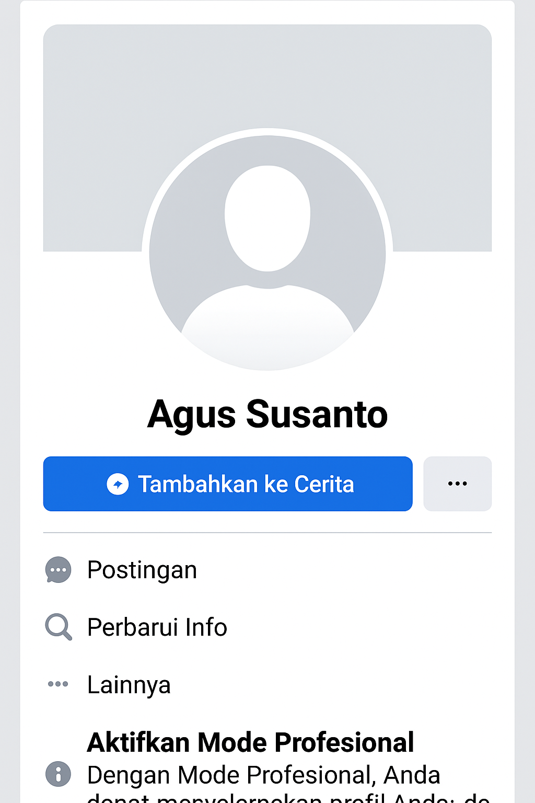
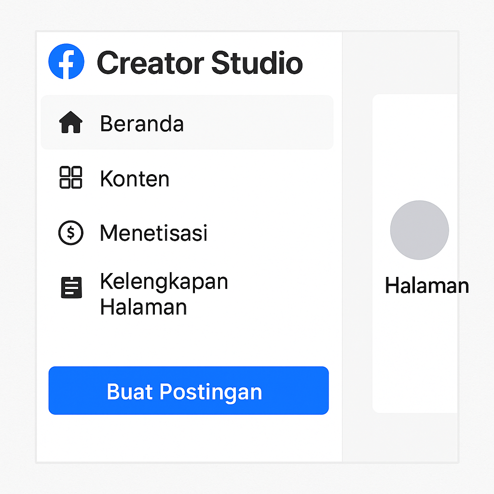
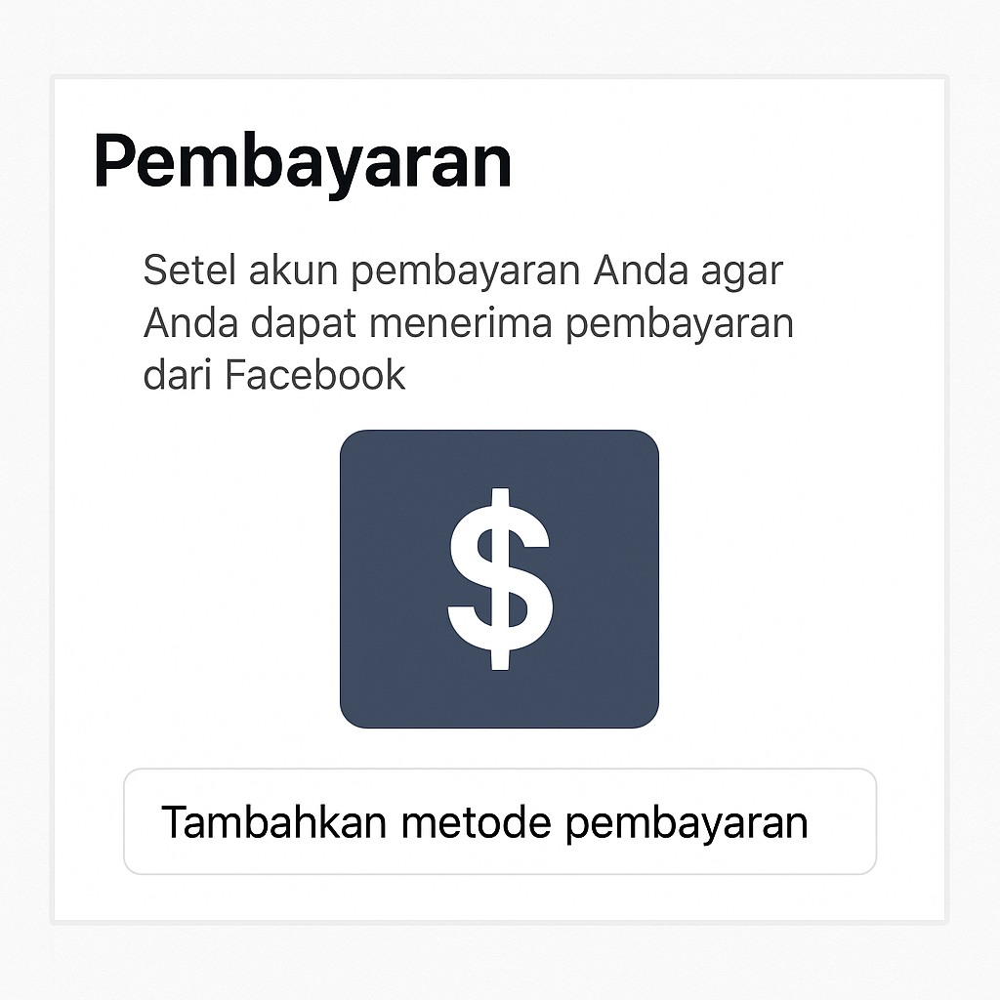
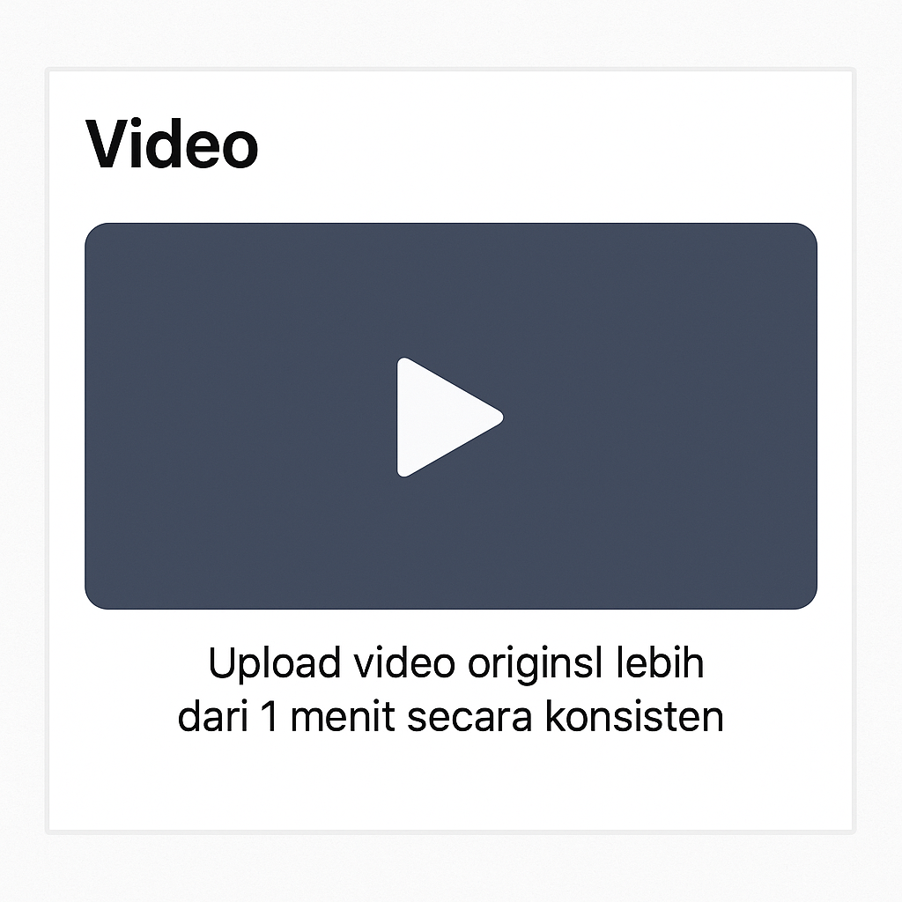

Monetisasi Facebook Profesional memungkinkan kamu menghasilkan uang dari konten melalui fitur seperti Iklan In-Stream, Langganan Fans, dan Kolaborasi Bermerek. Berikut adalah langkah lengkap dan berkualitas untuk mengaktifkannya.
Kamu perlu mengubah akun pribadi menjadi mode profesional (Professional Mode).
Syarat utama untuk monetisasi:
Kunjungi Creator Studio dan login dengan akun FB kamu.
Pada Creator Studio:
Jika layak, Facebook akan meminta kamu menambahkan metode pembayaran.
Pastikan kamu rutin upload konten berdurasi 1 menit ke atas agar bisa dimonetisasi.
10.000 pengikut, 600.000 tayangan dalam 60 hari, dan konten original.
Bisa, jika sudah diubah ke mode profesional dan memenuhi syarat.
Minimal 1 menit, disarankan 3 menit ke atas untuk hasil maksimal.
Dengan mengikuti langkah-langkah di atas dan konsisten membuat konten berkualitas, kamu bisa mulai menghasilkan uang dari Facebook.
Semoga bermanfaat! Bagikan artikel ini jika membantu, dan pantau terus DemenNgoprek untuk panduan lainnya!